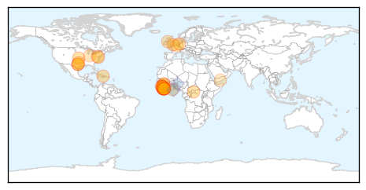
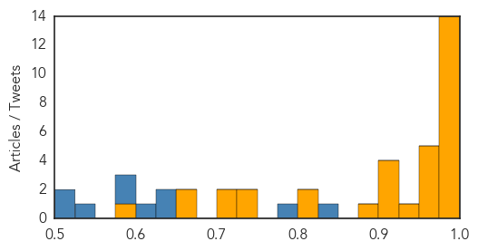

Mumps
30-Day Web Trend
0 alerts, 0 warnings
30-Day Twitter Trend
0 alerts, 0 warnings

Article Locations

Article Confidences

Top Articles:
-
No articles found for May 01, 2015
Top Tweets:
-
No tweets found for May 01, 2015
Ebola
30-Day Web Trend
0 alerts, 0 warnings

30-Day Twitter Trend
0 alerts, 0 warnings

Article Locations
Article Confidences
Top Articles:
- 1.000
- US Shuts Ebola Treatment Center in Liberia
- 1.000
- Ebola research: Fever not a surefire sign of infection
- 0.999
- Post-Ebola syndrome mystery
- 0.999
- Ebola Survivors Should Use Condoms Indefinitely, CDC Says
- 0.999
- Ebola may increase cases of malaria
- 0.997
- Ending Ebola before rainy season imperative says new acting head of UNMEER
- 0.997
- UN says ending Ebola before rainy season imperative - Xinhua
- 0.997
- Report: 5 months after infection, man spreads Ebola via sex - MyNorthwest
- 0.996
- U.S.-built Ebola unit decommissioned in Liberia as virus crisis ends
- 0.994
- Medical Unit for Health Workers Decommissioned
- 0.993
- Tarrant County Resident Tests Negative For Ebola « CBS Dallas
- 0.992
- Ellen hails US Ebola support
- 0.983
- US shuts down Ebola treatment center in Liberia
- 0.982
- Liberia burials key in Ebola fight
- 0.969
- “Sierra Leone Will Bounce Back From Ebola”...President Koroma vows
- 0.967
- UNESCO, Chinese school tech fund helps Liberia recover from Ebola - CIO India News on
- 0.966
- Anxiety Builds over ‘Magic Day’
- 0.960
- Tarrant County Resident Tests Negative for Ebola
- 0.960
- US decommissions Monrovia medical unit
- 0.945
- WHO Regional Director for Africa Dr Matshidiso Moeti concludes her visit to Liberia - WHO
- 0.919
- Welcome to the Expotimes News
- 0.905
- Back to School After the Ebola Outbreak
- 0.905
- My life as an Ebola vaccine guinea pig
- 0.903
- CONHNOL distributes mosquito nets
- 0.886
- Casey wants more tracking of Lyme disease in Pa.
- 0.816
- Another Indiana congressman warns of immigrant Ebola risk
- 0.803
- Tourists abandon Ghana despite its successes against Ebola
- 0.743
- 1.8 million School kits boost learning for children in Sierra Leone
- 0.737
- Ambassador Nyenabo Urges Colleagues to Push Africa’s Interests
- 0.713
- When Ebola Outbreaks Are Just A Part of the Job
- 0.704
- Pres. Sirleaf meets U.S. Surgeon General and delegation
- 0.657
- Leocem in Hot Waters
- 0.656
- For non-compliance of labour laws… Lawmakers Frown at Airtel
- 0.589
- Sam Sumana Deleted From APC
Top Tweets:
- 0.954
- Health Care Equity Needed To Fight Ebola - Health Affairs (blog) http://t.co/VZPDCvDTTx ebola EVD
- 0.913
- CDC Cautions against Unprotected Sex with Ebola Survivors - Scientific American http://t.co/bk5RKzBKSs ebola EVD
- 0.904
- Ebola travel ban wasn't necessary after all - MSNBC http://t.co/x3R7zIPF7v ebola EVD
- 0.885
- A New Zealand nurse who developed Ebola-like symptoms after returning from Sierra Leone has tested negative for Ebola http://t.co/v0IIDpNkF6
- 0.882
- WHO approves Ebola test reagent developed by Chinese firm - Economic Times http://t.co/IqKa3m2IWl ebola EVD
- 0.868
- 'I invented the “bubble” used to transport Ebola patients by plane' - Financial Times http://t.co/IxYg42MpM2 ebola EVD
- 0.845
- Report: 5 months after infection, man spreads Ebola via sex - Fresno Bee http://t.co/8A0VO9yRKT ebola EVD
- 0.780
- Tarrant County Resident Being Monitored For Ebola - CBS Local http://t.co/9BANLJsJdr ebola EVD
- 0.776
- Dallas Morning News revisits Ebola crisis and Baptist church's embrace of ... - GetReligion (blog) http://t.co/F3FnpRPH0q ebola EVD
- 0.771
- My life as an Ebola vaccine guinea pig - The Independent http://t.co/3XxiIy8S8i ebola EVD
- 0.701
- The Ebola outbreak is still active. The EbolaResponse cannot stop http://t.co/fbkxgZw9Xk
- 0.694
- AFD Blog `EID Journal: The Stability Of The Ebola Virus On Surfaces & In Fluids' http://t.co/VEqVNDhQZB
- 0.666
- Liberian woman appears to have contracted Ebola through sex with survivor - USA TODAY http://t.co/87iYS2rqRO ebola EVD
- 0.631
- Liberia has reported no confirmed Ebola cases for the 5th consecutive week. EbolaResponse http://t.co/bxOAxwJs5w
- 0.627
- 1 May news pouch on avianflu avianinfluenza Ebola EbolaResponse MERS Nepal and more, here: http://t.co/2qpRpMH3vJ
- 0.623
- For the second consecutive week, no new Ebola health worker infections were reported in the week to 26 April. EbolaResponse
- 0.608
- .@WHO to work closely w/ authorities of Ebola affected countries 2 rebuild confidence in health systems & services http://t.co/dNUcl4GIkB
- 0.537
- Fighting Ebola with HIV drugs one step closer - WMUR Manchester http://t.co/cxDsffNBiv ebola EVD
- 0.535
- Fighting Ebola in the Slums of Freetown - http://t.co/NaiI6Jl8yj http://t.co/OIBkZNcEF1 ebola EVD
- 0.516
- New study suggests Ebola outbreak has lead to a spike in malaria deaths http://t.co/8Ja0FSnsPd